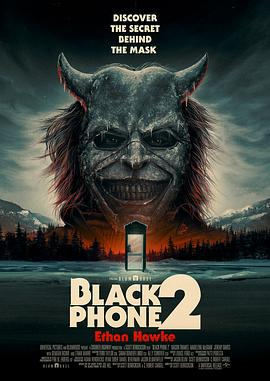

6.1
黑色电话2
The Black Phone 2
2025
美国
评分 6.1
导演:
斯科特·德瑞克森
演员:
伊桑·霍克 / 梅森·泰晤士 / 玛德琳·麦格劳 / 德米安·比齐尔 / 米格尔·卡萨雷斯·莫拉 / 杰瑞米·戴维斯 / 阿里安娜·里瓦斯
类型:
恐怖
剧情简介
四年前，年仅 13 岁的芬尼在恐怖绑架中奋力反击，杀死了名为“抓取者”的连环凶手并成功逃脱，成为唯一的幸存者。尽管身体获救，他的内心始终被噩梦与罪恶的余烬缠绕。妹妹格温此刻十五岁，梦境中的电话铃声打破了她的平静：她在梦中接到神秘的来电，看到三个男孩在冬令营“阿尔卑斯湖”被无形力量追踪。为了结束他们家族的痛苦，格温说服芬尼冒雪来到那座宁静却暗藏危机的营地。他们发现，树林之外的雪地、湖面下的冰层、破旧营房里映出的不是嬉笑，而是潜伏的阴影。昔日的绑匪已逝去，但他的力量在死后却愈加可怖——他借“电话”再次伸手。芬尼和格温一边逃避现实中的恐惧，一边揭开绑架案与营地历史之间的脉络。他们发现，那些孩子、那些电话、那座营地，背后不仅是一场复仇，更是一条关于记忆与救赎的暗河。影片以雪暴、冰湖、空旷教堂为舞台，空间紧闭且寒冷，角色恐惧与迷茫在镜头中游走。电话铃声在寂静中回响，呼叫来自死者的声音，抓取者的气息仿佛并未离开。他曾靠恐惧统治活人世界，如今他用冷冽的冬夜继续猎食。芬尼与格温必须不仅面对他，也要面对自己多年未愈的伤痛；在这场生死博弈中，他们逐步认明：勇气并非没有恐惧，而是在黑夜中仍愿接听那通电话。